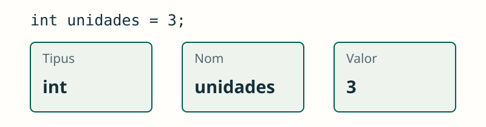

Tipus de dades, variables i constants
JAVA / FONAMENTS
Guardar informació
Cada dada té un tipus; cada variable té un nom i un valor.
El nom identifica la dada; el tipus limita els valors que podem guardar. Triem els dos segons el problema que volem resoldre.
int guarda enters; double, decimals; boolean, true o false; char, un caràcter. String guarda text i no és un tipus primitiu.
int unidades = 3;
double precio = 2.5;
boolean disponible = true;
char talla = 'M';
String nombre = "Alex";
JAVA / FONAMENTS
Triar un tipus
El tipus expressa quina informació guardem.
Un preu pot tindre part decimal. double és suficient per a estos exercicis inicials; les quantitats monetàries exactes requerixen un altre tractament.
Veure l’explicació
double permet representar valors amb part decimal; int guarda enters.
double precio = 2.5;JAVA / FONAMENTS
Assignar un valor nou
Una assignació substituïx el valor anterior.
Llig les assignacions en orde: primer guardem 3 i després el substituïm per 5. El tipus de la variable continua sent int.
Veure l’explicació
La segona assignació guarda 5. No suma al valor anterior.
int unidades = 3;
unidades = 5;
System.out.println(unidades);JAVA / FONAMENTS
Una constant
final impedix tornar a assignar la variable.
final permet donar nom a un valor que no s’ha de reassignar. Així evitem repetir nombres amb un significat poc clar.
Veure l’explicació
No compila: IVA ja té el seu valor i és final.
final double IVA = 0.21;
IVA = 0.10;JAVA / FONAMENTS
El bloc marca l’abast
Una variable local només és accessible dins del seu bloc, després de declarar-la.
Les claus delimiten un bloc. Una variable declarada dins només es pot utilitzar des de la seua declaració fins al final d’eixe bloc.
Veure l’explicació
puntos es va declarar en el bloc interior i no es pot utilitzar fora.
{
int puntos = 5;
}
System.out.println(puntos);PROVA I OBSERVA
Una variable que canvia
Assigna un valor i observa què guarda la variable. Assignar substituïx; incrementar suma una unitat.
Distingix dos accions: assignar canvia el valor guardat; incrementar calcula el valor anterior més u. L’eixida permet seguir eixe canvi.
Simulació didàctica de les operacions mostrades; no executa codi Java.